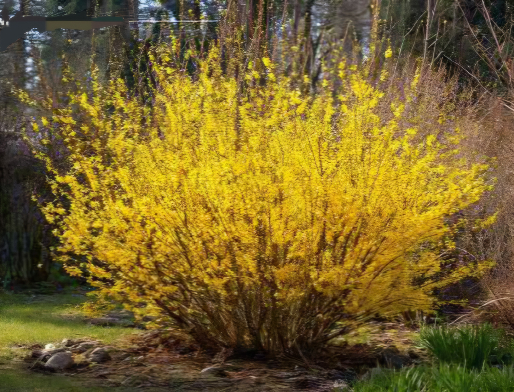

Martie în Grădină: Ghidul Complet de la A la Z
Luna martie este pragul dintre iarnă și viață. Este momentul în care deciziile luate acum vor dicta abundența recoltei de la vară...

I. Fundația: Pregătirea și Însănătoșirea Solului
Pământul este un organism viu, nu doar un suport pentru plante. În martie, prima prioritate este structura solului. După dezgheț, solul este adesea tasat. Evită să calci pe straturi pentru a nu distruge porozitatea. Dacă solul tău este argilos, adaugă nisip și materie organică (compost) pentru a îmbunătăți drenajul.
Este momentul ideal pentru a testa pH-ul. Majoritatea legumelor preferă un pH între 6.0 și 7.0. Un strat de 5-10 cm de compost bine descompus va oferi nutrienții necesari fără a "arde" rădăcinile tinere.
II. Semănăturile Timpurii
Mazărea are nevoie de frig pentru a nu se "mănoasa". Semănați-o la 3-4 cm adâncime. Spanacul și loboda sunt campioanele vitaminelor acum. Morcovul și pătrunjelul necesită umiditate constantă pentru germinare.
Când înflorește forsythia (tufa galbenă), e semn că solul s-a încălzit pentru sfecla roșie.